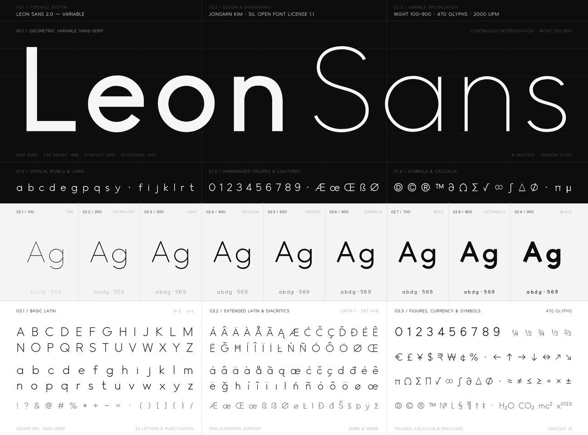

Leon Sans is a geometric variable sans-serif typeface designed by Jongmin Kim. Originally conceived in 2019 alongside the code-driven JavaScript Leon Sans project to celebrate the birth of his son Leon, Version 2.0 delivers a standalone OpenType variable font engineered on a 2000-UPM grid for desktop, web, and interface typography.
Interpolating across eight editable UFO masters, Version 2.0 spans a continuous weight axis from Thin (100) to Black (900). Its 1:1 circular bowls, open apertures, and optically tapered curve-to-stem transitions in bowls and numerals (such as a, b, d, g, p, q, 5, 6, and 9) preserve crisp counter geometry from hairline display settings to heavy text weights.
The 470-glyph repertoire covers Google Fonts Latin Core and extended pan-European Latin, harmonized lining figures, full superscripts, subscripts, and vulgar fractions, international currency signs, geometric arrows, and calculus and scientific symbols, supported by OpenType kerning, contextual dotless forms, and mark-to-mark positioning. Leon Sans is licensed under the SIL Open Font License 1.1 at github.com/cmiscm/leonsansfont.
